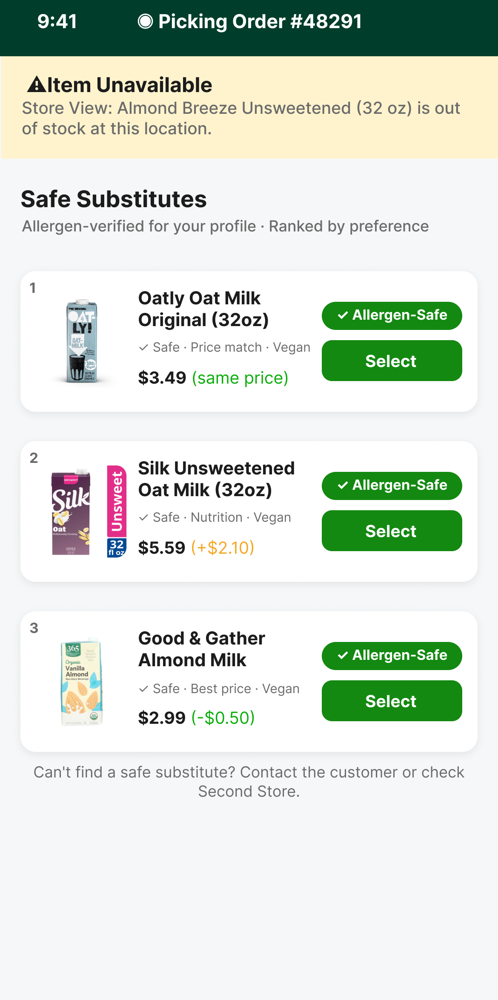
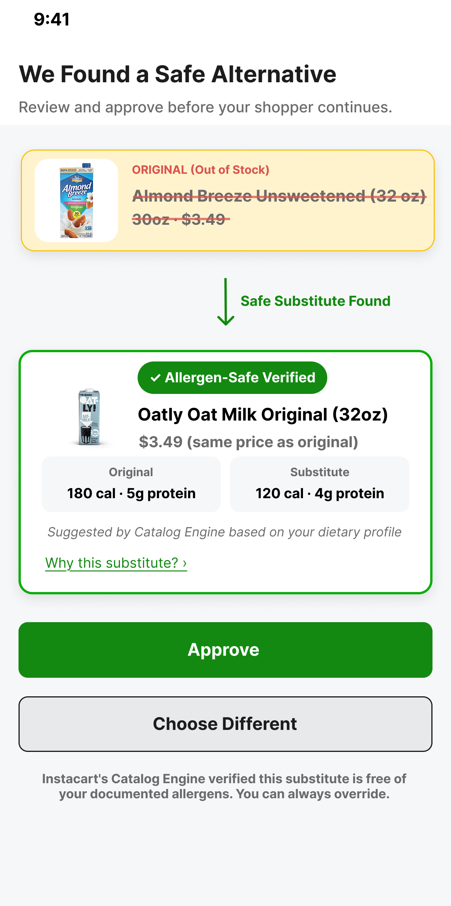

Project A · Case Study · March 2026
Catalog-Powered Smart Substitution via Store View
The problem hiding in plain sight
I started this project by asking a simple question: what actually happens when a shopper fulfills an AI-curated, health-specific cart and one of the items is not on the shelf?
The default answer is a popularity-based guess. For most items, that is fine. For a user with a severe peanut allergy who ordered peanut-free almond milk, it could be a health incident. For a vegan user, it breaks a dietary commitment they trusted the app to honor. For the retailer, it is a liability they probably did not know they were carrying.
Before building anything, I read firsthand accounts from Instacart shoppers and consumers on Reddit. Shoppers described the anxiety of grabbing a substitute without knowing if it was safe. Consumers described receiving items that violated dietary restrictions they thought the app understood. That gap is what this project is trying to close: the distance between what the system assumed was fine and what the user actually needed.
The most important feature of this system is sometimes outputting nothing at all.
What surprised me is that Cart Assistant, Store View, and Catalog Engine each handle part of this well. The failure mode lives in how they connect to each other at the moment an item goes out of stock during fulfillment.
The decision pipeline
The instinct when building a substitution system is to find the best substitute. I think the more important question in a health-sensitive context is: which options should be eliminated before any ranking happens at all? Safety is checked first as a pass/fail filter. If a product fails, it never gets ranked.
What the simulation found
I structured the evaluation as an offline A/B simulation. The same 34,994 OOS events ran through both the popularity baseline and the guardrail engine, which gave a direct measure of what the guardrail actually changed.
| Metric | Popularity baseline | Guardrail engine |
|---|---|---|
| Critical mismatch rate | 8.44% | 0.00% |
| Allergen mismatches (absolute) | 2,457 | 0 |
| Substitution coverage | ~83% | 84.8% |
One finding stood out: the guardrail never blocked every candidate in a populated aisle. Every time the engine had candidates to evaluate, it found at least one safe one. The 15.2% no-substitute rate came entirely from products outside my 5,000-product catalog scope. In production, with Catalog Engine’s full 1.3B+ attribute data points, that gap closes automatically.
One guardrail doing work for four sides
Consumer
Allergen and dietary constraints are enforced as absolute limits before any ranking happens. The consumer’s health profile shapes the result from the very first step.
Shopper
Pre-vetted substitutes arrive with reason codes explaining why each one was chosen. The shopper can pick with confidence and does not absorb the reputational cost of a system error they had no part in.
Retailer
Basket value is preserved on out-of-stock events rather than lost to abandonment. The liability risk of a wrong substitute reaching an allergic consumer is eliminated before it can become a retailer problem.
Advertiser
Substitution logic is transparent and rule-based, which opens the door to an “approved substitute” ad product where brands can designate preferred alternatives within the safety constraints.
The design
The engine surfaces results in two places: the Shopper app during picking, and the Consumer app as a transparent notification. Both screens were designed in Figma.


What I would explore next
Two directions feel most worth pursuing if I were continuing this work. The first is advertiser substitution controls: letting CPG brands pre-approve specific substitute products for when their items are out of stock, with the guardrail still running first so a brand can never approve a substitute that violates a user’s allergy or dietary profile. The second is a Cart Assistant integration that would surface the substitution decision conversationally, so instead of a generic notification a consumer sees something like: “Your almond milk was out of stock. I found an oat milk that fits your dairy-free profile. Same price, similar calories.”
Both directions depend on the same thing: Cart Assistant session context flowing downstream to the fulfillment layer. That is also what Project B is about.
Continue to Project B
Shopper Earnings at Risk: Modeling the Fulfillment Cost of Agentic Commerce →